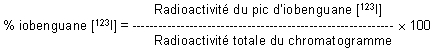
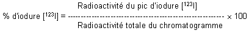
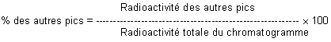

RÉSUMÉ DES CARACTÉRISTIQUES DU PRODUIT
ANSM - Mis à jour le : 28/11/2002
Trousse pour la préparation de la solution injectable d'iobenguane (123I). [Référence: IK-4]
2. COMPOSITION QUALITATIVE ET QUANTITATIVE
Ampoule IK-4 A (solution de sulfate d'ammonium 0,1 M)
Sulfate d'ammonium ........................................................................................................................ 13,2 mg
Eau pour préparations injectables ................................................................................................. q.s.p. 1 ml
Ampoule IK-4 B (tampon acétate 0,005 M)
Acétate de sodium trihydraté ............................................................................................................ 2,60 mg
Acide acétique ................................................................................................................................ 0,36 mg
Eau pour préparations injectables ................................................................................................. q.s.p. 5 ml
Ampoule IK-4 C (solution d'iobenguane)
Iobenguane (DCI) ............................................................................................................................. 1,33 mg
Eau pour préparations injectables ............................................................................................... q.s.p. 0,4 ml
La trousse ne contient pas de conservateur antimicrobien.
Pour la liste complète des excipients, voir rubrique 6.1.
Solution injectable.
4.1. Indications thérapeutiques
Ce médicament est à usage diagnostique uniquement.
Après marquage avec une solution d'iodure (123I) de sodium:
· Scintigraphie des tumeurs des tissus dérivés de la crête neurale embryonnaire, telles que les phéochromocytomes, les paragangliomes, les chémodectomes et les neurogangliomes.
· Détection, classification et suivi après traitement des neuroblastomes.
· Evaluation de la captation de l'iobenguane lorsqu'une utilisation thérapeutique est envisagée.
· Recherche d'une hyperplasie médullosurrénalienne.
· Appréciation de l'innervation sympathique du myocarde.
4.2. Posologie et mode d'administration
Le contenu des ampoules pris séparément ne doit pas être administré directement au patient.
L'iobenguane (123I) sera administrée par injection intraveineuse lente ou par perfusion. Si nécessaire, le volume administré peut être augmenté par dilution.
Chez l'enfant, la solution injectable d'iobenguane (123I) sera administrée aux doses suivantes:
· Enfant de moins de 6 mois: 4 MBq par kg de poids (max. 40 MBq).
· Enfant de 6 mois à 2 ans: 4 MBq par kg de poids (min. 40 MBq).
· Enfant de plus de 2 ans: l'activité à injecter est une fraction de celle utilisée chez l'adulte calculée en fonction du poids. Les activités recommandées sont les suivantes:
|
Poids en kg |
Activité en MBq |
Poids en kg |
Activité en MBq |
Poids en kg |
Activité en MBq |
|
8 |
46 |
25 |
110 |
40 |
152 |
|
10 |
54 |
30 |
124 |
45 |
162 |
|
15 |
76 |
35 |
140 |
50 |
176 |
|
20 |
92 |
|
|
|
|
· Chez l'adulte, l'activité recommandée est de 200 MBq mais des activités plus élevées peuvent s'avérer nécessaires.
· Chez la personne âgée: il n'y a pas lieu d'adapter la dose.
· Les scintigraphies du corps entier, antérieures ou postérieures, et/ou des images centrées sur les organes cibles, et/ou des images SPECT peuvent être réalisées 24 heures après l'administration de l'iobenguane (123I) et éventuellement répétées à 48 heures.
Aucune contre-indication absolue connue à ce jour.
4.4. Mises en garde spéciales et précautions d'emploi
Le contenu des ampoules pris séparément ne doit pas être administré directement au patient.
Les produits radiopharmaceutiques ne doivent être réceptionnés, utilisés et administrés que par des personnes autorisées dans les services agréés. Leur réception, leur stockage, leur utilisation, leur transfert et leur élimination sont soumis aux réglementations et aux autorisations appropriées des autorités compétentes.
Les produits radiopharmaceutiques doivent être préparés de manière à satisfaire à la fois aux normes de radioprotection et de qualité pharmaceutique. Toutes les précautions appropriées d'asepsie doivent être prises afin de satisfaire aux exigences des Bonnes Pratiques de Fabrication pharmaceutique.
· Les traitements avec des médicaments connus pour leurs effets inhibiteurs sur la captation (voir rubrique 4.5) de l'iobenguane (123I) doivent être interrompus avant l'examen (habituellement pendant 4 périodes biologiques).
· Le blocage de la fixation thyroïdienne est entrepris 24 à 48 heures avant l'injection de la solution d'iobenguane (123I); il sera poursuivi durant au moins 3 jours. Le blocage par le perchlorate de potassium est obtenu après administration d'environ 400 mg/jour. Le blocage avec de l'iodure de potassium, l'iodate de potassium, ou une solution de Lugol, est obtenu après administration d'une quantité équivalente à 100 mg d'iode par jour.
· La captation de l'iobenguane par les granules chromaffines peut, en théorie, provoquer une sécrétion rapide de noradrénaline, provoquant une poussée hypertensive. Le patient doit donc être gardé sous surveillance constante lors de l'administration.
· L'iobenguane (123I) doit être administré lentement, sur plusieurs minutes, par voie intraveineuse.
4.5. Interactions avec d'autres médicaments et autres formes d'interactions
Les médicaments suivants sont susceptibles de prolonger ou réduire la captation de l'iobenguane par les tumeurs des tissus dérivés de la crête neurale.
· La nifédipine (inhibiteur calcique) prolonge la rétention de l'iobenguane.
· Une captation réduite est observée lors de l'administration thérapeutique des produits suivants: réserpine, labetalol, les inhibiteurs calciques (diltiazem, nifédipine, vérapamil), les anti-dépresseurs tricycliques (amitriptyline, imipramine et leurs dérivés), les agents sympathomimétiques (présents dans les décongestionnants nasaux, tels que phényléphrine, éphédrine ou phénylpropranolamine), la cocaïne, les phénothiazines.
L'administration des ces médicaments doit être interrompue (habituellement quatre périodes biologiques) avant l'administration de l'iobenguane (123I).
Lorsqu'il est nécessaire d'administrer un produit radiopharmaceutique à une femme en âge de procréer, toute éventualité de grossesse doit être écartée. Toute femme n'ayant pas eu ses règles doit être considérée comme enceinte jusqu'à preuve du contraire. Dans le doute, il est important que l'exposition aux radiations soit réduite au minimum pour obtenir les informations cliniques souhaitées. D'autres techniques n'impliquant pas l'emploi de radiations ionisantes peuvent être envisagées, si elles n'altèrent pas la qualité du diagnostic.
Les examens utilisant des radionucléides chez la femme enceinte entraînent également l'irradiation du fœtus. Il ne faut réaliser au cours de la grossesse que les seules investigations absolument nécessaires lorsque le bénéfice probable dépasse les risques encourus par la mère et le fœtus.
Avant d'administrer un produit radiopharmaceutique à une femme en cours d'allaitement, il faut envisager de repousser l'examen jusqu'à la fin de l'allaitement ou s'assurer dans le cas contraire que le radiopharmaceutique choisi, est le plus approprié, compte-tenu de l'éventuel passage de la radioactivité dans le lait.
Si l'administration d'iobenguane (123I) est indispensable, l'allaitement doit être suspendu pendant au moins trois jours et le lait produit pendant cette période doit être éliminé.
L'allaitement peut être repris lorsque l'activité dans le lait ne risque pas d'entraîner une dose de radiations pour l'enfant supérieure à 1 mSv.
4.7. Effets sur l'aptitude à conduire des véhicules et à utiliser des machines
Aucun connu à ce jour.
Dans quelques rares cas, des effets secondaires peuvent être observés: rougeur, urticaire, nausées, frissons et autres symptômes de réactions anaphylactiques.
Si le produit est administré trop rapidement, on peut observer des palpitations, une dyspnée, des bouffées de chaleur, une hypertension transitoire et des crampes abdominales, pendant ou immédiatement après l'injection. Ces symptômes disparaissent dans l'heure qui suit leur apparition.
Pour tous les patients, l'exposition aux radiations ionisantes doit être justifiée par le bénéfice diagnostique attendu. L'activité administrée doit être telle que l'irradiation qui en découle soit aussi faible que possible, en gardant à l'esprit la nécessité d'obtenir le diagnostic requis.
L'exposition aux radiations ionisantes peut potentiellement induire des cancers ou développer des déficiences héréditaires. L'expérience montre que, pour ce qui est des examens diagnostiques en médecine nucléaire, la fréquence de ces effets indésirables est très faible en raison des faibles activités utilisées.
Pour la plupart des examens de médecine nucléaire à des fins de diagnostic, la dose de radiations délivrée (Dose Efficace) est inférieure à 20 mSv. L'utilisation de plus fortes activités justifiés par le contexte clinique peuvent faire dépasser ce seuil.
Un surdosage est potentiellement impossible. Cependant, un surdosage en iobenguane entraîne la libération d'adrénaline. Cet effet de courte durée exige la mise en route d'un traitement destiné à faire baisser la tension artérielle tel que l'injection rapide d'un agent bloquant alpha-adrénergique à action rapide (phentolamine) suivie de l'administration d'un béta-bloquant (propranolol). Le rein étant l'organe principal d'élimination, l'élimination du radionucléide peut être augmentée par une diurèse forcée avec mictions fréquentes.
5. PROPRIETES PHARMACOLOGIQUES
5.1. Propriétés pharmacodynamiques
Produit radiopharmaceutique à usage diagnostique,
(V: Divers).
L'iobenguane (123I) est une aralkylguanidine radioiodée. Elle est constituée d'un groupe guanidine de la guanéthidine, lié à un radical benzyle dans lequel l'iode a été introduit. Comme la guanéthidine, les alkylguanidines sont des agents adrénergiques neuro-bloquants. En raison d'une ressemblance fonctionnelle entre les neurones adrénergiques et les cellules chromaffines de la partie médullaire des glandes surrénales, l'iobenguane se fixe de façon préférentielle sur ces structures. Elle peut également se localiser dans le myocarde.
Parmi toutes les aralkylguanidines, l'iobenguane est préférée pour sa plus faible captation hépatique et sa meilleure stabilité in vivo, et donc une moindre captation thyroïdienne de l'iode libéré. Le transport de l'iobenguane au travers des membranes cellulaires de cellules dérivées de la crête neurale, est un processus actif, lorsque la concentration du produit est basse (cas des examens diagnostiques). Le mécanisme de captation peut-être inhibé par la prise d'inhibiteurs tels que la cocaïne ou la desméthylimipramine.
Après captation, un mécanisme de transfert actif concentre l'iobenguane intracellulaire vers les granules de stockage.
5.2. Propriétés pharmacocinétiques
La captation initiale est importante dans le foie (33 % de la dose administrée) et bien moindre dans les poumons (3 %), le myocarde (0,8 %), la rate (0,6 %) et les glandes salivaires (0,4 %). La captation dans les glandes surrénales normales (médullosurrénale) est si faible qu'elle ne peut être visualisée au moyen de l'iobenguane (123I). Les surrénales hyperplasiques par contre ont une captation élevée.
L'iobenguane est en grande partie éliminée telle quelle par les reins. 70 à 90 % des doses administrées sont éliminées dans les urines dans les 4 premiers jours. Les métabolites suivants peuvent être retrouvés dans les urines: iode-123, acide (123I)-métaiodohippurique, (123I)-hydroxy-iodobenzylguanidine et acide (123I)-méta-iodobenzoïque. L'ensemble de ces substances représente environ 5 à 15% de la dose administrée.
5.3. Données de sécurité préclinique
Chez le chien, une dose de 20 mg/kg est létale. Des doses plus faibles (14 mg/kg) provoquent des signes cliniques transitoires de toxicité.
L'administration réitérée chez le chien de doses de 2,5 à 10 mg/kg induit des effets cliniques tels qu'une augmentation de la pression artérielle, des troubles du rythme et de la conduction cardiaques, mais aussi d'autres signes transitoires.
Chez le rat, l'administration intraveineuse réitérée de doses de 20 à 40 mg/kg induit des signes cliniques de toxicité sévère.
De même, l'administration intraveineuse réitérée de doses de 5 à 20 mg/kg induit des effets toxiques dont une détresse respiratoire; à long terme, les effets se limitent à une légère augmentation de poids du foie et du cœur.
Aucun effet mutagène n'a été observé au cours des essais sur les systèmes testés.
Aucune étude sur le potentiel carcinogène de l'iobenguane n'a été publiée à ce jour.
· Ampoule IK-4 A: sulfate d'ammonium.
· Ampoule IK-4 B: acétate de sodium trihydraté, acide acétique.
· Ampoule IK-4 C: eau pour préparations injectables.
Afin d'obtenir une bonne qualité de marquage, la solution d'iodure (123I) de sodium utilisée pour ce marquage doit être en milieu sodique et ne doit pas contenir d'ions chlorures.
12 mois après la date de fabrication.
La date de péremption est indiquée sur le conditionnement extérieur ainsi que sur chaque ampoule.
6 heures après marquage pour le produit marqué.
Après ouverture/reconstitution/dilution: le produit doit être utilisé immédiatement.
6.4. Précautions particulières de conservation
Conserver la trousse à une température ne dépassant pas +25°C et protégée de la lumière.
Conserver le produit marqué à une température comprise entre +2°C et +8°C.
La conservation du produit doit se faire en accord avec les réglementations nationales et internationales relatives aux produits radioactifs.
6.5. Nature et contenu de l'emballage extérieur
Ampoules de 2 ml et 5 ml, en verre étiré incolore, de type I, selon la Pharmacopée Européenne.
6.6. Précautions particulières d’élimination et de manipulation
Tout produit non utilisé ou déchet doit être éliminé conformément à la réglementation en vigueur.
7. TITULAIRE DE L’AUTORISATION DE MISE SUR LE MARCHE
CIS BIO INTERNATIONAL
RN 306
BP 32
91192 Gif-sur-Yvette Cedex
8. NUMERO(S) D’AUTORISATION DE MISE SUR LE MARCHE
· 564 446-9: 0,4, 1 et 5 ml en ampoules (verre); boîte de 2 séries de 3 ampoules.
9. DATE DE PREMIERE AUTORISATION/DE RENOUVELLEMENT DE L’AUTORISATION
[à compléter par le titulaire]
10. DATE DE MISE A JOUR DU TEXTE
[à compléter par le titulaire]
L'iode-123 (numéro atomique 53; nombre de masse 123) dont la période est de 13,2 heures décroît en tellure-123 stable par capture électronique et émission de photons gamma d'énergie 159 keV (83,6%).
Selon les publications n° 53 et 60 de la CIPR (Commission Internationale pour la Protection Radiologique), les doses de radiation absorbées par les patients sont les suivantes:
La liste comprend uniquement les organes utilisés pour calculer la dose efficace (corps entier): sept organes standards et cinq présentant les plus hautes doses absorbées (marqués d'une astérisque dans le tableau suivant).
|
ORGANE |
DOSE ABSORBEE PAR UNITE D'ACTIVITE ADMINISTRE |
||||
|
Adulte |
15 ans |
10 ans |
5 ans |
1 an |
|
|
*Foie |
7,1 . 10-2 |
8,9 . 10-2 |
1,3 . 10-1 |
1,9 . 10-1 |
3,4 . 10-1 |
|
*Paroi vésicale |
7,0 . 10-2 |
8,7 . 10-2 |
1,3 . 10-1 |
1,9 . 10-1 |
3,5 . 10-1 |
|
*Rate |
2,0 . 10-2 |
2,8 . 10-2 |
4,3 . 10-2 |
6,6 . 10-2 |
1,2 . 10-1 |
|
*Glandes salivaires |
1,7 . 10-2 |
2,2 . 10-2 |
3,1 . 10-2 |
4,5 . 10-2 |
7,2 . 10-2 |
|
Poumons |
1,6 . 10-2 |
2,3 . 10-2 |
3,2 . 10-2 |
4,8 . 10-2 |
9,1 . 10-2 |
|
*Reins |
1,4 . 10-2 |
1,7 . 10-2 |
2,5 . 10-2 |
3,6 . 10-2 |
0,6 . 10-1 |
|
Surrénales |
1,1 . 10-2 |
1,5 . 10-2 |
2,2 . 10-2 |
3,1 . 10-2 |
5,1 . 10-2 |
|
Moelle osseuse |
9,2 . 10-3 |
1,2 . 10-2 |
1,7 . 10-2 |
2,5 . 10-2 |
4,5 . 10-2 |
|
Ovaires |
8,0 . 10-3 |
0,1 . 10-1 |
1,6 . 10-2 |
2,6 . 10-2 |
4,7 . 10-2 |
|
Surfaces osseuses |
7,6 . 10-3 |
9,3 . 10-3 |
1,5 . 10-2 |
2,3 . 10-2 |
4,5 . 10-2 |
|
Seins |
6,2 . 10-3 |
6,2 . 10-3 |
9,8 . 10-3 |
1,6 . 10-2 |
0,3 . 10-1 |
|
Testicules |
5,4 . 10-3 |
7,3 . 10-3 |
1,2 . 10-2 |
0,2 . 10-1 |
3,8 . 10-2 |
|
Thyroïde |
4,2 . 10-3 |
6,2 . 10-3 |
1,0 . 10-1 |
1,7 . 10-1 |
3,1 . 10-1 |
|
Dose Efficace (mSv/MBq |
1,6 . 10-2 |
2,0 . 10-2 |
3,1 . 10-2 |
4,6 . 10-2 |
8,5 . 10-2 |
La dose efficace après l'administration d'une activité de 200 MBq est de 3,2 mSv pour un adulte.
Les données ci-dessus sont valables pour un profil pharmacocinétique normal.
Lorsque la fonction rénale est altérée, la dose efficace et la dose de radiations délivrée aux organes peuvent-être accrues.
12. INSTRUCTIONS POUR LA PREPARATION DES RADIOPHARMACEUTIQUES
Méthode de préparation
La solution injectable d'iobenguane (123I) doit être marquée avec une solution stérile d'iodure (123I) de sodium.
Les précautions appropriées d'asepsie et de radioprotection doivent être respectées.
Il est recommandé d'effectuer ces opérations sous une hotte ventilée.
A l'aide d'une seringue hypodermique, prélever 0,3 ml de la solution contenue dans l'ampoule C (solution d'iobenguane), puis prélever 0,3 ml de la solution contenue dans l'ampoule A (solution de sulfate d'ammonium) à l'aide de la même seringue.
Introduire ces 0,6 ml dans un flacon stérile contenant au maximum 225 MBq d'iodure (123I) de sodium (ayant de préférence une concentration radioactive de l'ordre de 3700 MBq/ml) par injection à travers le bouchon.
Introduire une aiguille de mise à l'air dans le flacon de marquage.
Cette aiguille ne doit pas plonger dans le liquide mais affleurer à la surface inférieure du bouchon, pour permettre l'évaporation par la chaleur de toute la solution.
Placer le flacon dans un bain thermostaté à 150°C pendant 60 minutes.
Sortir le flacon et enlever l'aiguille de mise à l'air.
Ajouter 5 ml de la solution contenue dans l'ampoule B (tampon acétate) par injection à travers le bouchon.
Agiter jusqu'à dissolution complète du produit sec.
Laisser la solution revenir à température ambiante avant de l'injecter.
La préparation obtenue est une solution limpide et incolore, de pH compris entre 4,5 et 5,5 et de concentration radioactive égale au maximum à 45 MBq/ml.
Avant utilisation, la limpidité de la solution, le pH, la radioactivité et le spectre gamma doivent être contrôlés.
Contrôle de qualité
La qualité du marquage (pureté radiochimique) peut être contrôlée selon la méthode suivante:
Méthode
Chromatographie liquide
Matériels et réactifs
1. Colonne à chromatographie
Colonne en acier inoxydable d'une longueur de 0,25 m et d'un diamètre intérieur de 4,0 mm remplie de silice (5 μm)
2. Phase mobile
Mélange de 27 volumes de méthanol, 1 volume de nitrate d'ammonium 1 M et 2 volumes d'ammoniaque 2 M.
Débit: 1 ml/minute
3. Détecteur de radioactivité calibré pour l'iode-123
Spectrophotomètre réglé à 254 nm, muni d'une cellule à flux continu
Injecteur à boucle
Procédure
1. Préparer la solution de référence a) en dissolvant environ 100 mg d'iodure de sodium dans 100 ml de phase mobile.
2. Préparer la solution de référence b) en dissolvant environ 20,0 mg de sulfate d'iobenguane dans 100 ml de phase mobile.
3. Injecter les solutions de référence a) et b) et détecter avec le spectrophotomètre réglé à 254 nm.
Déterminer les temps de rétention respectifs de l'iodure et de l'iobenguane.
4. Injecter la préparation à examiner et détecter avec le détecteur de radioactivité.
Identifier les pics correspondant à l'iodure (123I) et l'iobenguane (123I).
Déterminer, le cas échéant, la présence d'autres pics.
Mesurer la radioactivité de chaque pic par intégration.
5. Calculs
Calculer le pourcentage de iobenguane (123I)

Calculer le pourcentage d'iodure (123I)

Calculer le pourcentage des autres pics

Le pourcentage d'iobenguane (123I) doit être au moins égal à 95 % (pureté radiochimique), le pourcentage d'iodure (123I) ne doit pas être supérieur à 4 % et le pourcentage des autres pics ne doit pas être supérieur à 1 %.
L'administration de produits radiopharmaceutiques présente des risques pour l'entourage du patient en raison de l'irradiation externe ou de la contamination par les urines, les vomissements, les expectorations. Par conséquent, il faut prendre les mesures de protection contre les radiations conformément aux réglementations nationales.
L'élimination des déchets doit se faire en accord avec les réglementations nationales et internationales.
Liste I.
Prescription réservée à l'usage hospitalier.
Les produits radiopharmaceutiques ne doivent être utilisés que par des personnes qualifiées. Ils ne peuvent être délivrés qu'à des praticiens ayant obtenu l'autorisation spéciale prévue à l'article R 5234-6 du Code de la Santé publique.